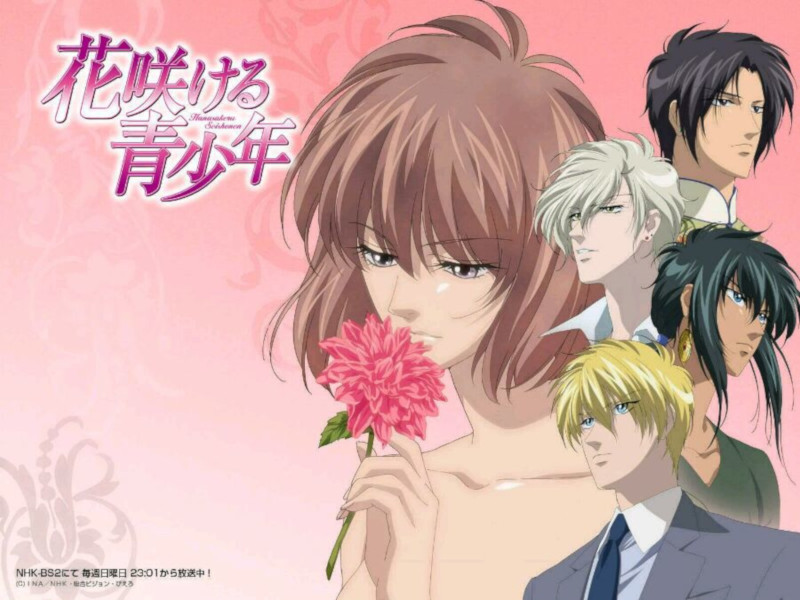

天国少女
交配类型：BG
《天国少女》是1987年至1994年间在白泉社发行的少女漫画杂志《LaLa》上连载的少女漫画，原名直译为“花季青少年”。于2009年4月被改编为TV动画，在NHK卫星第2频道首期播出，2010年2月完结，共39话。
原作者树夏实作为出道较早的漫画家，国内读者或许有不少是从1997年发行的OVA《出云传奇》以及2006年的TV动画《兽王星》中了解到她的名字。由于她的作品在前两次动画化的时候篇幅都比较短，在剧情展开等方面都有些捉襟见肘，所以此次她在个人博客上表示对《天国少女》预定三个季度的长度感到非常欣慰。此次动画版将由《火影忍者》、《死神》等长篇系列动画的制作公司Studio Pierrot负责制作。《蝉鸣之时》、《纯情罗曼史》的监督今千秋出任本片的监督。25集之后改由《梦幻游戏》、《史上最强弟子兼一》龟垣 一督导。由森川智之、远藤绫、福山润、小野大辅、浪川大辅等当红人气声优为主要角色担任配音。
剧情简介
本作讲述了身为世界级大财团会长的独生女儿，14岁的少女花鹿在父亲的要求下进行了一场选夫游戏，与来自世界各地的三个优秀青年相知相识，以选择能够守护自己一生的丈夫。然而由于花鹿所背负的宿命，她和她的三个候补丈夫随后都被卷入了围绕着某神秘之国王位继承权的纷争之中……
推荐理由